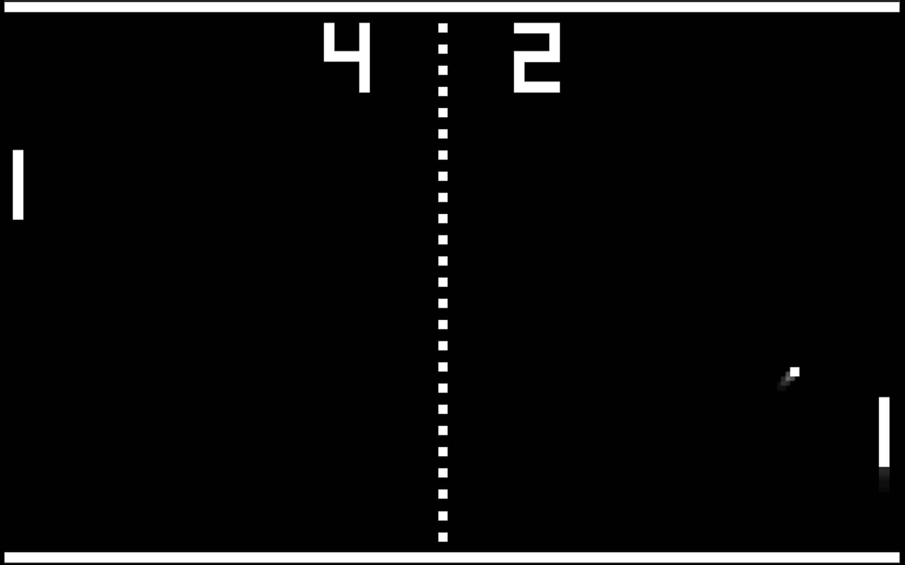
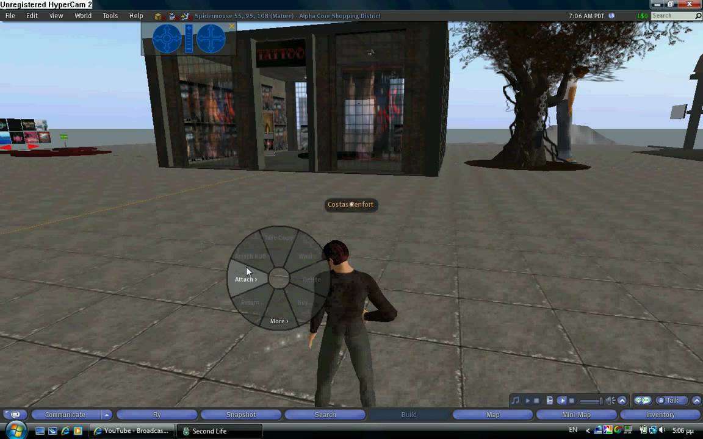

Gaming History
How Far Back it goes
How Far Back it goes
Pong, an electronic version of ping pong, was the first widely played video game. It was simple: you moved a bar up and down to deflect the ball, which your opponent (either the machine or another player) would attempt to deflect on the other side. It became popular in the 1970s. Since then, gaming has grown increasingly complex with enhanced graphics, full-motion video, 3-D effects and high fidelity stereo sound. Specialized input devices such as joysticks and steering wheels enhance the ability of the user to interact with the programs. Games designed for playing offline on individual computers are sold on DVD or Blu-ray media and can be downloaded from the Internet.
Multiplayer Gaming
Second Life, one of the first massively multiplayer universe (MMU) games, uses a decentralized server architecture to meet the demands of up to several thousand online users simultaneously. In its most sophisticated form, a gaming interface can constitute a form of virtual reality. More recent developments include motion gaming, which responds to the movements of users, and virtual reality headsets, which enable an immersive experience.
